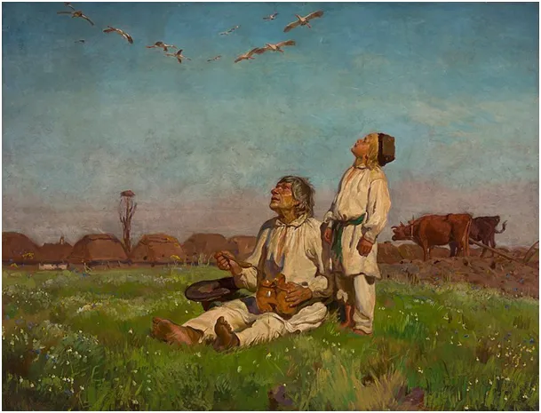

Jak na świętego Józefa chmurki, to sadź ziemniaki gdzie górki, a jak pogoda, to sadź gdzie woda.
"Jak na świętego Józefa chmurki, to sadź ziemniaki gdzie górki, a jak pogoda, to sadź gdzie woda." Tyle przysłowie.
Mamy dziś Józefa i wiele przysłów ludowych jest wokół tej daty, bo to dzień przełomowy, o czym mogliśmy się dziś przekonać spacerując w słońcu. Obraz Józefa Chełmońskiego z 1900 "Bociany" pokazuje nam świat sprzed 100 lat. Jak widać człowiek pracujący na polu może nawet w marcu obyć się bez butów, silnika spalinowego i telefonu. Czy o to chodzi panie Shwab ? Mimo to wygląda na zorientowanego w sytuacji i wie, co i kiedy ma jeść bez specjalnej aplikacji. Mało tego, z koloru nieba przewiduje, jaki będzie stan wód gruntowych w tym sezonie.

Obraz ten często był wykorzystywany w propagandzie do pokazania "ciężkiej doli chłopa pańszczyźnianego". Tymczasem na terenach zaboru rosyjskiego w Polsce od 1864 chłopi byli wolnym stanem i pracowali na swojej ziemi. Normą były 5-10 dzietne rodziny i to bez edukacji seksualnej. Gwałtowny bum demograficzny zasilał szybko rozwijające się miasta a później emigracje do obu Ameryk.
Plagą była wysoka umieralność noworodków, co skutkowało bardzo silną i zdrową populacją. Inne przysłowie mówi:, "Gdy boćki dolecą na św. Józefa, w komorze będzie dostatek, w kołysce uciecha." Teraz łatwiej nam zrozumieć powiedzenie, że to bociany przynoszą dzieci.
Ciekawostka: często w Polsce bociany nazywane są lelek, identycznie jak w tureckim.
O postaci św. Józefa i jego czasach napisałem kiedyś tekst, zapraszam https://pch24.pl/herod-a-sw-jozef-karykatura-wladzy-kontra-wzor-meskosci/
Paweł Klimczewski